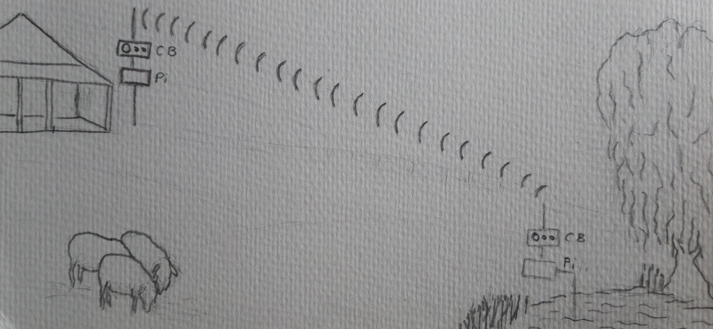

Project
Overview
The project seeks to make available a low cost automation system for farmers.
The project will use low cost hardware, and initially custom developed software to specifically implement the system.
The hardware will consist of :
UHF CB radio * 2
Raspberry PI * 2
Switching modules eg relay circuitry or MOSFETS
At least 2 CB radios will be linked. One will be a “base” station and can be controlled by a PC or raspberry PI. A second CB radio will be the remote transceiver, transferring control data to a Raspberry PI which in turn can control high power switching devices.
The initial application is a water level measuring system.

Motivation
While there are some systems already on the market, they appear to be “high end” and costly. Furthermore they do not seem suitable for more simple applications on farms which I’ll call a medium range scenario.
“As seen on TV” there are some home based systems that use internet and/or WIFI. There are other smart phone based systems using an app to control devices. The problem with these solutions is that either range is restrictive in the case of direct WiFi, or a subscription to a phone carrier or satellite provider is needed (one for each device).
The proposed system outlined in this assignment will be low cost, and not requiring 3rd party infrastructure.
Description
Raspberry PI
The Raspberry PI is (well was, they are in short supply – this will improve) an inexpensive, single board computer usually running a Linux based operating system. Although PI’s were initially designed to teach coding to students, they can be used in much more broad applications including hardware control.
In this case, the Pi performs many functions
Ancillary hardware input (sensors)
Hardware control (eg switching)
Interpreting data
Formatting data commands ready for transmission
Controlling the CB radio (eg switching between receive and transmit modes)
Forwarding and receiving formatted data (in the form of tones) to/from the CB
UHF CB Radio
The CB’s, connected to the Pi will be used for transmitting and receiving data used by ancillary devices eg switches and sensors.
UHF CB radios are widely available in Australia. They operate on the designated 477MHz FM band. 80 channels are available – however there are only 2 channels allowed for telemetry use. The reliable “rule of thumb” range for the UHF frequency is 1km per watt of transmit power over line of sight. In Australia, there is a mandated maximum transmit power of 5 watts.
An obvious feature of using CB is it is free, in that is no license is required. If using other than CB radio, while power and therefore range may be larger, requires annual license fee and management since a quarantined (or “owned”) part of the spectrum as managed by ACMA is required.
There are many CB options available for purchase. Offerings on Ebay can include units from overseas that have not been certified for use in Australia. These units should not be used as they can propagate radio “spatter” across multiple channels. These units are unlikely to be effective for telemetry use (as well as being illegal).
Ancillary devices
These can be classified into two categories – switches and sensors. A good thing about raspberry PI’s is that the ancillary devices can be connected to either the General Purpose Input and Output (GPIO) pins, or via USB connection.
An example of a switch is a relay or MOSFET. The purpose of these switches is to receive a low power signal from the Pi, and enable switching of high power (current and/or voltage) devices. A simple example is switching on a pump. MOSFETS can be used in high speed switching applications, for example where Pulse Width Modulation for devices that require a digital signal input (eg another electronic device).
Another method of communicating with switches is via USB, where a series of relays can be controlled through the a single USB cable, this tends to be much more neater than using a series of wires from the GPIO.
Sensing hardware will communicate to the Pi. The signals can be in the form of a digital signal (ie a value is sent) or analogue (a voltage). An example of a simple analogue signal is a water level sensor that outputs a voltage when covered with water. An example of a digital signal (in the form of a value) may be a temperature reading and is read as a byte
Tools and Technologies
All the physical devices at low cost are explained above.
On the Pi, two broad categories custom software are needed:
Radio operation including signal formatting
Sensor communication
For the radio operation we will need software to generate the tones needed for transmission of the data. It is anticipated a preexisting library can be used for this eg https://github.com/ahopper/PSKCoreSDR
We will also need software to physically operate the radio. This will entail manipulating the Push To Talk (PTT) feature, usually by bridging to transmit, open to receive.
In the case of communication with sensors, this can be achieved using simple Linux shell scripts to either operate the GPIO pins or send a signal in the case of USB operated sensors.
Skills Required
Any person with electronics and Linux hobbyist experience should be make this project. However, please note, the information contained in this assignment is targeted at low power Direct Current projects only. Engagement of an electrician will be needed for any projects needing to use AC switching unless a 3rd party low power interface (to AC) is used.
A simple interface to the PTT radio feature will require some basic soldering skills.
Likewise an interface from the sensor to GPIO will require some connection. As mentioned, a preferable method is to use USB enabled devices.
Basic understanding of Linux shell scripts would be an advantage.
If a level of sophistication is required at the base station, for example a GUI showing water levels with an audible alarm, a software engineer may be required
Outcome
As proof of concept, build and successfully test a radio telemetry system that assures a water level in a dam. Further more sophisticated applications can be undertake after the system is proven eg controlling a valve. A GUI could be developed that that may present gauges to the user or alarms if thresholds are met.